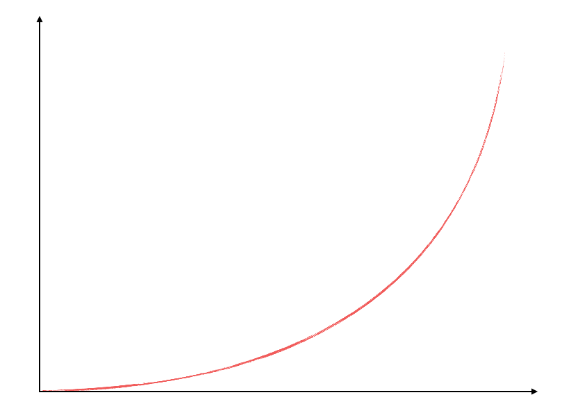

- 00 开篇词 程序行知：走在同样的路上，遇见自己的风景.md.html
- 01 初心：为什么成为一名程序员？.md.html
- 02 初惑：技术方向的选择.md.html
- 03 初程：带上一份技能地图.md.html
- 04 初感：别了校园，入了江湖.md.html
- 05 架构与实现：它们的连接与分界？.md.html
- 06 模式与框架：它们的关系与误区？.md.html
- 07 多维与视图：系统设计的思考维度与展现视图.md.html
- 08 代码与分类：工业级编程的代码分类与特征.md.html
- 09 粗放与精益：编程的两种思路与方式.md.html
- 10 炫技与克制：代码的两种味道与态度.md.html
- 11 三阶段进化：调试，编写与运行代码.md.html
- 12 Bug的空间属性：环境依赖与过敏反应.md.html
- 13 Bug的时间属性：周期特点与非规律性.md.html
- 14 Bug的反复出现：重蹈覆辙与吸取教训.md.html
- 15 根源：计划的愿景——仰望星空.md.html
- 16 方式：计划的方法——脚踏实地.md.html
- 17 检视：计划的可行——时间与承诺.md.html
- 18 评估：计划的收获——成本与收益.md.html
- 19 障碍：从计划到坚持，再到坚持不下去的时候.md.html
- 20 执行：从坚持到持续，再到形成自己的节奏.md.html
- 21 信息：过载与有效.md.html
- 22 领域：知识与体系.md.html
- 23 转化：能力与输出.md.html
- 24 并行：工作与学习.md.html
- 25 时间：塑造基石习惯（上）——感知与测量.md.html
- 26 时间：塑造基石习惯（下）——切割与构建.md.html
- 27 试试：一种“坏”习惯.md.html
- 28 提问：从技术到人生的习惯.md.html
- 29 偏好：个人习惯的局限与反思.md.html
- 30 写作：写字如编码.md.html
- 31 画图：一图胜千言.md.html
- 32 演讲：表达的技术.md.html
- 33 定义：阶梯与级别.md.html
- 34 晋升：评定与博弈.md.html
- 35 关系：学徒与导师.md.html
- 36 核心：安全与效率——工程技术的两个核心维度.md.html
- 37 过程：规模与协作——规模化的过程方法.md.html
- 38 思维：科学与系统——两类问题的两种思维解法.md.html
- 39 职业倦怠：如何面对？.md.html
- 40 局部最优：如何逃离？.md.html
- 41 沟通之痛：如何改变？.md.html
- 42 技术停滞：如何更新？.md.html
- 43 无法实现：困扰与反思.md.html
- 44 完成作品：理想与现实.md.html
- 45 代码评审：寄望与哀伤.md.html
- 46 人到中年：失业与恐惧.md.html
- 47 该不该去创业公司？.md.html
- 48 该不该接外包？.md.html
- 49 技术干货那么多，如何选？.md.html
- 50 技术分歧，如何决策？.md.html
- 51 技术债务，有意或无意的选择？.md.html
- 52 选择从众，还是唯一？.md.html
- 53 选择工作，还是生活？.md.html
- 54 侠客行：一技压身，天下行走.md.html
- 55 江湖路：刀剑相接，战场升级.md.html
- 56 御剑流：一击必杀，万剑归心.md.html
- 57 三维度：专业、展现与连接.md.html
- 58 三人行：前辈、平辈与后辈.md.html
- 59 三角色：程序员、技术主管与架构师.md.html
- 60 三视角：定位、自省与多维.md.html
- 61 工作之余，专业之外.md.html
- 62 跨越断层，突破边界.md.html
- 63 成长蓝图，进化跃迁.md.html
- 尾声 始于知，终于行.md.html
- 捐赠
24 并行：工作与学习
在工作中，你应该碰到过一些这样的情况，有同事工作的时间不短，经常加班加点，工作也很勤勉，但每每晋升时却碰壁了。你可能还会为其打抱不平过。难道这真的只是不公平或者运气不佳吗？
其实这种情况，隐藏在背后更深层次的原因是：工作陷入了循环与重复，从此停止了成长。
那么，你该如何在工作的同时，保持学习，并持续成长与进阶呢？我想，可以先从分析“程序员的工作本质是什么”开始着手。
工作
程序员的主要工作是：编程，产出代码，完成需求，交付程序系统。
程序员按其工作技能和经验，大体又分为三个阶段：初级、中级和高级。这三个级别的程序员的主要工作都是编程与产出代码，产出代码的数量也许相差不大，但产出的代码属性就可能有明显差别。
什么是代码属性？它包括资产与负债两类。由大量初级程序员产出的代码并以此构建的软件系统，如果最终能完成交付，那么很可能资产和负债性基本持平。这是很多早期创业公司产出代码的属性特征，因为创业公司早期缺乏资金和足够的知名度，难以吸引到又多又好的中、高级程序员加入。
这样的代码构建的系统多属于勉强满足业务需要，虽看不出明显的 Bug，但一遇到特殊情况就容易宕机。整个系统虽然勉强能支撑公司运营，但其中欠下了大量的技术债；先活下来，未来再来慢慢还。
若是完成了一个债务比资产还大的系统，会是个什么样的情况呢？那这就是一个还存在明显 Bug 的系统，是基本无法完成交付和上线的。
因此，现在互联网行业创业团队的主流做法，都是先完成一个资产和负债刚好过平衡点的系统，发布上线，接受反馈，再快速迭代，最后在迭代中不断地提升其资产性，降低其负债性。
这样的方式在行业里有一个实践的榜样：Facebook。它还有一句著名的标语：
Done is better than perfect.
比完美更重要的是先完成。
但如果你仅停留于此，那工作就永远在完成，并不会走向完美。而且，工作的内容还会不断地重复，让你从此陷入成长的停滞区。
从初、中级走向高级程序员，就不仅仅是交付代码，完成工作，还要有后续的更高要求。如：达成品质、优化效率。而在不断晋级的路上，跨越的门槛就在于此，很多人比较容易被卡在不断地在完成工作，但却没有去反思、沉淀、迭代并改进，导致一直停留在了不断重复的怪圈之中。
程序员，工作以产出代码为主，从初级到高级，代码的负债属性逐步降低，资产属性不断提升，最终成为高品质的个人贡献者。而从完成到追求品质和完美的路上，不仅仅是靠工作实践的经验积累，还需要有意识地持续学习。
学习
持续学习，是让你突破不断循环怪圈的不二法门。
在工作中，我一直有观察到一个现象，很多人因为离开学校后，工作任务多，压力大，从此就停止了系统地学习。在《浪潮之巅》一书中，吴军写道：
国内: 小时候努力，到大学后就不努力了。-
国外: 到大学后才开始努力，很快就超过国内学生。
吴军这对比国内外的教育，也反映了我们教育中作为学生的一种心态，觉得毕业了，离开学校后就不需要多努力学习了。但目前程序员这个职业所面临的技术发展和更迭远超其他行业，你即便只是为了能够保质保量地完成任务，也需要保持持续学习的节奏。
现如今是个信息爆炸与知识过载时代，所以学习必须要有选择性。
我读大学那阵儿，学程序期间喜欢电脑，就爱帮同学人肉组装（DIY）个机什么的，而且还反复折腾安装操作系统。那时的 Windows 系统的特点之一就是越用越慢，一年半载就需要重装一次，所以可没少反复和折腾，分散了不少我的时间和精力，原本以为能主动学到新东西，但结果发现其实都是被动的。所以，学习还是要聚焦和主动选择，毕竟你的精力和时间都是有限的。
而有选择性的学习就需要找出真正与你近期规划有关的学习路径。
假如你工作入职后公司使用 Java 为主要开发语言，而大学里你一直学习使用 C 或 C++ 编程练习，这里再假设你对计算机相关的基础性学科和知识掌握良好，比如：操作系统、数据库、网络、组成原理、编译原理、算法基础、数据结构等等。那么为了更好地完成工作任务，就需要你先主动学习 Java 编程语言、开发框架等编程技术相关的知识。
而对于学习语言本身我觉得最高效的方法就是看一本该领域的经典入门书。比如，对于 Java 就是《Java 核心技术》或《Java 编程思想》，这是我称之为第一维度的书，聚焦于一个技术领域并讲得透彻清晰。
在有了该语言的一些实际编程和工程经验后，就可以看一些该领域第二维度的书，比如：《Effective Java》《UNIX 编程艺术》等，这些是聚焦于特定领域经验总结型的书，这类书最有价值的地方是其聚焦于领域的思想和思路。
如果过早地看这类书反而没什么帮助，甚至还会可能造成误解与困扰。例如，我看豆瓣上关于《UNIX 编程艺术》的书评，有这么一条：“很多例子和概念已经成了古董，当历史书看，无所获。”这显然就是过早接触了第二维度的书，却预期得到第一维度的收获，自然无所获了。
而另外一些技能，像 Java 开发工作需要大量使用的开源框架又该如何学习？张铁蕾曾写过一篇《技术的正宗与野路子》，其中介绍了如何用真正 “正宗” 的方式去学习并快速掌握这些层出不穷的开源新框架和技术。
这里就借用原文里的一张图（重新按统一风格绘制了下），每一项开源框架或技术相关的学习资料可以组织成下面这张金字塔形的结构图。
技术学习资料的层次结构示例图
Tutorial（指南） 和 API Reference（应用编程接口参考） 层次的信息资料能帮助你快速上手开发，而 Spec（技术规范）和 Code（源代码）会帮助你深刻地理解这门技术。而其他相关的技术书籍和文章其实是作为一种补充阅读，好的技术书籍和文章应该有官方资料中未涵盖的特定经验或实践才算值得一读。
张铁蕾在文中如是说：
每当我们接触一项新技术的时候，都要把手头的资料按照类似这样的一个金字塔结构进行分类。如果我们阅读了一些技术博客和技术书籍，那么也要清楚地知道它们涉及到的是金字塔中的哪些部分。
我深以为然，关于技术学习我们不能简单地蜻蜓点水、复制粘贴、拿来主义，应是去建立你的知识 “金字塔”，形成体系结构，而每次的学习实践都是在不断完善你的 “金字塔”。至于更多技术性学习的细节，若你感兴趣的话，也可以去看看那篇文章。
路径
保持学习，不断成长，工作也许还在重复，但成长却在迭代上升，然后才会有机会面临更多可选择的路径。
程序员在攀登职场阶梯的道路上，走过了高级，后面还会有好些分叉路线。比如，转到脱离技术的纯管理岗或者技术管理岗。技术主管或架构师某种意义上都属于技术管理岗，不懂技术是做不了这两个角色的；或者继续沿着深度领域走，成为细分领域专家。
这后面哪条路适合你呢？你是随大流，还是自己认真思考和决定？这是做选择题。如果一生要工作三十多年，前十年你多在做解答题，解决一个又一个问题。那么在大约走过这三分之一后，你就会开始做越来越多的选择题。为什么呢？因为一开始可能没有太多可供你选择的机会。而后续做好选择题，则需要大量学习，还需要不断地试错。
面对怎么选路的问题，我近些年学习的收获是这样的：选择走最适合实现个人价值的路。这就是我的基础选择价值观。程序员的个人价值该怎么实现？该如何最大化？程序员作为个人贡献者，到了一定的熟练阶段，产出基本就稳定了，而技能的成长却呈现对数曲线的增长特征。
任何一个你所尝试提升的事情都有一个增长曲线，这个曲线有两种形态：
- 对数增长形态：这种类型在初期增长很快，但随后进展就越发困难；
- 指数增长形态：这种类型在初期增长很慢，但存在积累的复利效应。
增长要么是对数形态，要么是指数形态，很少有线性的。
对数增长也意味着更容易退步，因为起步阶段是如此陡峭（见对数曲线示例图）。比如，学习一门新的技能，不持续去应用，很快就忘了，退回原点。那你应该如何应对这种“窘况”呢？我建议你在起初的高增长阶段，学习和工作的关注点需放在养成长期习惯上，因为虽然开始增长很快，但需要小心一旦停止努力它可能会向下滑落，所以一定要慎之又慎，坚持形成自己的习惯和节奏。
对数增长曲线示例
而指数增长则意味着存在一个拐点的 “突变” 时刻。很多人期望线性增长，但实际却是按指数增长的，这让许多人在拐点发生前就放弃了。比如，写作，在呈指数增长的领域内，到处都是半途而废者。所以，做本质是指数增长曲线的事情时，柔韧且持久的思维模式是关键。

指数增长曲线示例
工作多年后，技能的增长就又进入了对数的平缓区域，通常其回报呈现递减趋势。也就是说你在其上花的功夫越来越多，但你感到越来越难产生洞察以获得新的收益。其难处在于找到新的突破点，重新回到曲线陡峭上升的部分。
这就是所谓成长的瓶颈，你要学会应用指数增长的方法，找到价值贡献的放大器。作为程序员，你有可能很幸运地编写服务于数千万或数亿人的软件服务，这是产品自带的价值放大器。这样同是写一份代码，你的价值就是要比别人大很多。而转管理者或架构师，这些角色无非都是自带杠杆因子的，所以也有价值放大的作用。但个人能否适应得了这样的角色转换，又是另一回事了。
拉姆·查兰有本书叫《领导梯队》，书里把人才潜能分成三种：熟练潜能、成长潜能和转型潜能。原书对这三点做了详细的特征描述，我简单提炼下主要特点：
- 熟练潜能：关注当前专业领域且十分熟练，但没有显示出在开发新能力上的努力，竭力维持现有技能。
- 成长潜能：按需开发新能力，显示出高于当前层级要求的其他技能，如：专业、管理、领导。
- 转型潜能：持续有规律地开发新能力，追求跨层级的挑战和机会，展现雄心壮志。
人力资源管理中的高潜人才盘点，基本就来自这套模型，主要就是识别出这三类潜能人才。“熟练潜能” 已是我们这行对学习的最低要求，在程序员这个技术日新月异的行业里，维持现有技能确实已经让不少人感觉很竭力了。
那你拥有怎样的潜能呢？它不一定都是天赋，可能也是选择。
成长这条路从来都不是笔直的，你的“奔跑速度”也不会一直是匀速的。在每一个拐弯处，都应减速，思考，学习，然后再加速，进步。
到此我总结下今天的分享：
程序员的工作形式是编程产出代码，本质是完成需求，交付系统；但在工作中容易陷入不断完成的循环怪圈，要打破它，就需要你持续学习并有意识地关注交付代码的品质和属性，一方面提升了交付质量，另一方面也获得了个人成长。
而学习的路在时间上是永远持续的，在空间上也是有路径的；有效的学习需要你关注学习曲线的变化，遵循有体系的技术学习框架，匹配适合当前阶段的学习资源。
最后，关于工作和学习，有人总感觉有些冲突，忙起来就没时间学了。那你是怎么看待这件事呢？欢迎留言分享你的观点，我们一起探讨。
© 2019 - 2023 Liangliang Lee. Powered by gin and hexo-theme-book.